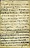

[PAGE 1] The toast includes the sex, universally: it is to Woman, comprehensively, wheresoever she may be found. Let us consider her ways. First comes the matter of dress. This is a most important consideration, in a [PAGE 2] subject of this nature, and must be disposed of before we can intelligently proceed to examine the profounder depths of the theme. For text, let us take the dress of two antipodal types -- the savage woman of Central Africa and the cultivated daughter of our high modern civilization. Among the Fans, a great Negro tribe, a woman, when dressed for home, or to go to the market, or to go out calling, does not wear anything [PAGE 3] at all but just her complexion. That is all; that is her entire outfit. It is the lightest costume in the world, but is made of the darkest material. It has often been mistaken for mourning. It is the trimmest, and neatest, and gracefulest costume that is now in fashion; it wears well, is fast colors, doesn't show dirt; you don't have to send it down town to wash, and have some of it come back scorched with the flatiron, and some of it with the buttons ironed off, and some of it petrified with starch, and some of it chewed by the [PAGE 4] calf, and some of it rotted with acids, and some of it exchanged for other costumers' things that haven't any virtue but holiness, and ten-twelfths of the pieces overcharged for, and the rest of the dozen "mislaid." And it always fits; it is the perfection of a fit. And it is the handiest dress in the whole realm of fashion. It is always ready, always "done up." When you call on a Fan lady, and send up your card, the hired girl never says, "Please take a seat, madam is dressing -- she will be down in three-quarters of an hour." No, madam is always dressed, always ready [PAGE 5] to receive; and before you can get the door-mat before your eyes, she is in your midst. Then again, the Fan ladies don't go to church to see what each other has got on; and they don't go back home and describe it and slander it.
[PAGE 6] Such is the dark child of savagery, as to everyday toilette; and thus, curiously enough, she finds a point of contact with the fair daughter of civilization and high fashion -- who has often got "nothing to wear"; and thus these widely separated types of the sex meet upon common ground. Yes, such is the Fan woman, as she appears in her simple, unostentatious, everyday toilette. But on state occasions she is more dressy. At a banquet she wears bracelets; at a lecture she wears earrings and a belt; at a ball she wears stockings -- [PAGE 7] and with the true feminine fondness for display, she wears them on her arms; at a funeral she wears a jacket of tar and ashes; at a wedding the bride who can afford it puts on pantaloons. Thus the dark child of savagery and the fair daughter of civilization meet once more upon common ground; and these two touches of nature make their whole world kin.
Now we will consider the dress of our other type. A large part of the daughter of civilization is her dress -- as it should be. Some civilized [PAGE 8] women would lose half their charm without dress; and some would lose all of it. The daughter of modern civilization, dressed at her utmost best, is a marvel of exquisite and beautiful art, and expense. All the lands, all the climes, and all the arts are laid under tribute to furnish her forth. Her linen is from Belfast, her robe is from Paris, her lace is from Venice, or Spain, or France; her feathers are from the remote regions of southern Africa, her furs from the remoter home of the iceberg and the aurora; her fan from Japan, [PAGE 9] her diamonds from Brazil, her bracelets from California, her pearls from Ceylon, her cameos from Rome; she has gems and trinkets from buried Pompeii; and others that graced comely Egyptian forms that have been dust and ashes, now, for forty centuries; her watch is from Geneva, her card case is from China, her hair is from -- from -- I don't know where her hair is from; I never could find out. That is, her other hair -- her public hair, her Sunday hair; I don't mean the hair she goes to bed with. [PAGE 10] Why, you ought to know the hair I mean; it's that thing which she calls a switch, and which resembles a switch as much as it resembles a brickbat, or a shotgun, or any other thing which you correct people with. It's that thing which she twists, and then coils round and round her head, beehive fashion, and then tucks the end in under the hive and harpoons it with a hairpin. And that reminds me of a trifle; any time you want to, you [PAGE 11] can glance around the carpet of a Pullman car and go and pick up a hairpin; but not to save your life can you get any woman in that car to acknowledge that hairpin. Now isn't that strange? But it's true. The woman who has never swerved from cast iron veracity and fidelity in her whole life, will, when confronted with this crucial test, deny her hair [PAGE 12] pin. She will deny that hairpin before a hundred witnesses. I have stupidly got into more trouble, and more hot water trying to hunt up the owner of a hairpin in a Pullman car than by any other indiscretion of my life.
[PAGE 13] Well, you can see what the daughter of civilization is, when she is dressed; and you have seen what the daughter of savagery is when she isn't. Such is Woman, as to costume. I come, now, to consider her in her higher and nobler aspects -- as mother, wife, widow, grass widow, mother-in-law, hired girl, telephone operator, telephone helloer, queen, book-agent, wet [PAGE 14] nurse, stepmother, boss, professional fat woman, professional double-headed woman, professional beauty, and so forth and so on.
We will simply discuss these few -- let the rest of the sex tarry in Jericho till we come again. First in the list, of right, and first in [PAGE 15] our gratitude, comes a woman who -- why, dear me, I've been talking three-quarters of an hour! I beg a thousand pardons. But you see, yourselves, that I had a large contract. I have accomplished something, anyway: I have introduced my subject; and if I had till next Forefathers' Day, I am satisfied that I could discuss it as adequately and appreciatively as [PAGE 16] so gracious and noble a theme deserves. But as the matter stands, now, let us finish as we began -- and say, without jesting, but with all sincerity, "Woman -- God Bless Her!"
[The signature on the last page of the manuscript, with the unusual complete use of Langhorne, MT added almost ten years after giving this toast, presumably when he made a present of the manuscript to someone.]